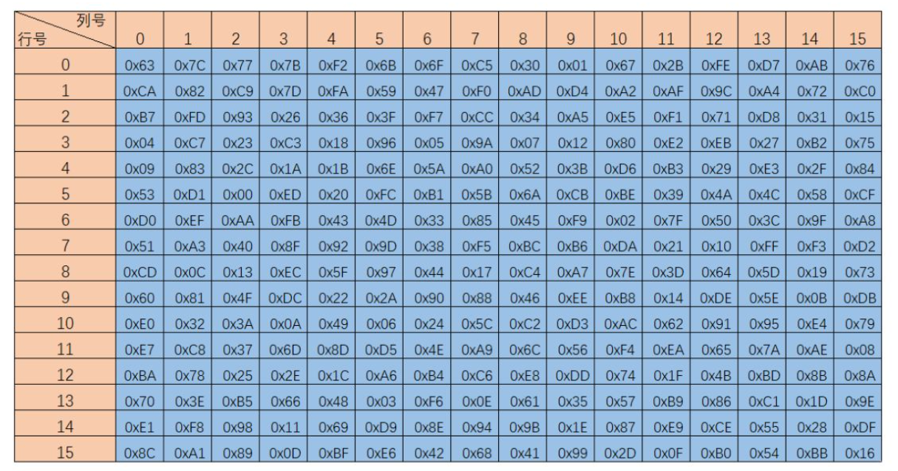

Back! 旧识新发
加密算法本身就是一个比较复杂的东西，里面也涉及到了许多的数学只是，但是由于现在的逆向题目通常与多种算法相结合，因此有必要对算法做出一定的了解。
但是这里的了解重点不在于算法的实现原理，而是通过一些小技巧去判断到底是什么算法，然后套用现成的脚本对其进行解密就行，以下给出几个算法判断小技巧
算法判断五个小技巧
- 静态观察关键特征
- IDA Findcrypt 插件
- 找常量(BOX、SBOX)
- 动态调试观察传参
- 动态调试观察返回结果
Base系列
严格意义上来说，base 系列其实不能算是加密，它其实是一种编码方式，编码就是将信息按照一定的格式重新进行编排，那就意味着任何人拿到编码后的信息都是能马上转成编码前的信息。
base 系列中最常见的就是 base64 编码，它是网络上最常见的用于传输 8bit 字节码的编码方式之一，base64 就是一种基于64个可视字符来表示二进制数据的方式。最常见于网页中包含图片数据时，采用 base64 编码可以将不可见的字节数据转变成字符串。
举个例子
上图就是一个 base64 算法的例子，将 ascll 码字符依照 ascll 码表得到对应的十进制数字，然后将十进制数字转化为二进制，因为一个 ascll 字符所占的大小是1个字节也就是8位，所以转化后的二进制是8位。转化完后对这些二进制进行重新的分割，将它从8个 bit 为一组变成6个 bit为一组，然后再对分割后的每一组进行高位补零的操作，再将得到的新的4组 8bit 二进制转化为10进制，对照 base64 的索引表获得新的4个符。
看完这个例子大致上也能明白为什么取3个字符为一组，因为 3*8=4*6=24。
用 C 语言算法实现 base64 的例子也有很多，可以网上好好看一看。
base64的特征
在 C 语言上，base64算法的特征体现在移位操作、编码表以及在编码表中取值上。
下图时加密时的移位操作

下图是编码表，当然在某些情况下，为了混淆，编码表可能会进行各种更改
下图是在编码表中的取值操作
静态观察关键特征
在 ida 中，反编译的代码特征主要也是这几点。
下图是计算索引时的移位运算操作和依据索引在编码表中取值
我们还可以在字符串中发现我们的编码表
如果在反编译的代码中能够发现这些类似的东西，那基本上就可以确定就是base64编码了。
利用插件
除了静态观察这些代码之外，还可以依靠 ida 的插件 Findcrypt，这个插件能够依据一些特定的字符来识别出算法中的一些东西，在 base64 中它能发现编码表
插件的缺点就是：它只能识别标准的算法，一旦编码过程或者编码表被更改混淆，那就只能自己去找和发现了。
常量
这里的常量就是这个编码表了。
输入输出
base64的输入输出典型的地方就是你输入3个字符它会吐给你4个字符，以此类推。观察输入输出的字符个数也可以用作判断的一个依据。
对称加密
简单来说就是拿一个密钥就能完成加密和解密这两个工作。
RC4
特点是算法简单，运算速度快
- 一种流加密
- 密钥长度可变，可变范围为1-256字节
- 根据明文长度生成密钥流
- 密钥流与明文异或生成密文
一些概念
- 状态向量 S，又叫 S 盒或者 SBOX，长度是 0-255
- 临时向量 T，是密钥的一个拓展
加解密流程
初始化 S 和 T——>初始排列 S——>生成密钥流——>生成密文或解密
步骤具体实现 C语言
初始化 S、T
1 | void init_S() // 初始化S |
初始排列 S
1 | void permute_S() |
生成密钥流
1 | void create_key_stream(BYTE* text, int textLength) |
加密、解密
1 | void Rc4EncryptText(BYTE* text) |
观察具体实现的步骤，其实明文在 RC4 算法中就只出现了一次，从明文到密文或是密文到明文变化的过程就是使用密钥流与所需内容进行一次异或，也因为异或具有自反性，所以加密和解密基本上就是一样的。
因此，对于 RC4 算法特征的判断主要在于初始化向量 S 和 T 以及 加密仅为密钥流与明文进行异或。
反编译后的代码和 C 语言实现的代码还是有很高的相似度的，在图中也可以大致看出来对于 S 和 T 的初始化函数

静态特征
0-255 S 向量初始化
0-255 T 向量初始化
仅对明文进行一次异或操作
动态观察
主要关注2个点来判断是不是 RC4 算法
- T向量初始化后的结果。T向量初始化后的结果一般都是密钥循环填充整个T数组。
- 密钥流与输入和密钥的对应关系。因为密钥流的生成和明文的输入基本上是没有什么关系，主要的关系就是密钥流的长度是由明文所决定的，因此在动态调试的时候，我们对明文进行更改，然后再观察密钥流的内容，如果密钥的内容没有什么大致的改变的话，那也可能是 RC4 算法。
DES
数据加密标准，是一种使用密钥加密的块算法。块算法就是：密钥的长度固定，每次加密的长度相同。
算法需要三个元素实现：Key、Data、Mode
- key： 密钥，长度是64位，其中的56位参与运算，剩余8位用于校验。
- Data： 是要被加密或解密的数据，大小为8个字节64位 //因为是块加密算法，所以数据被分割成了固定大小
- Mode： DES模式，通常有 ECB 和 CBC 模式
des 算法的流程大致如图所示，其实算法实现过程不用太关注，逆向的重点在于能够识别出这个算法。
我也只是大致了解了一下 des 算法，接下来大致说一下理解，首先梳理一下大致内容：
- Li 和 Ri 都是32位
- Ki 是48位
- $IP$ 和 $IP^{-1}$ 都是 64 位
函数f运作流程图
里面涉及到了很多东西：E盒、S盒、P盒。
子密钥的产生过程
des 的算法比较复杂，里面也涉及到了更多的数学知识。虽然算法复杂，但是辨别它是不是一个 des 算法其实并不难，des 算法中涉及到了大量的数据置换，因此 des 算法中有很多常量，这些常量就是置换表。如果说ida解析出来的程序里面有大量这种置换表的话那基本上就可以判断是 des 算法了。
模式的区分
前面也有提到 des 加密有两种模式分别是 ecb 和 cbc 模式。
这两中模式的区别就是 cbc 模式引入了 iv 向量，在对明文进行加密之前与iv向量多做了一次异或。
AES
高级加密标准，属于块加密，它的出现主要是为了取代 DES 加密算法，因为随着计算机性能的提升 DES 加密算法不是很安全了，因此 AES 和 DES 之间是有相似之处的。
AES 算法比 DES 算法更复杂一点
AES 算法和 DES 算法的主要区别在于加密轮次和置换表
- 加密轮次：des 是 16轮，aes 是9轮。
- 置换表：des 的置换表数量很多但是每一个置换表的大小相较而言没有那么大，aes 的置换表不多但是每个置换表都比较大，因为 aes 的密钥长度和分块加密的长度都是远大于 des 的。
S盒是 aes 加密的一个主要特征

Tips
DES 和 AES 都是块加密算法，它们每次加密的明文长度是固定的，当遇到明文长度不够的时候需要对内容进行填充操作，也就是 padding。
padding方式：Zero padding、PKCS7 padding
- Zero padding：填充位用0来填充
- PKCS7 padding：填充位用缺少的位数来填充
非对称加密
非对称加密既有公钥又有私钥，它们两个是不同的，加密用公钥，解密用私钥，加解密所用的密钥不同。
都说非对称加密了，哪有这么容易解啊，走了走了
Other
又遇到了好多新加密，什么 tea xxtea chacha20 ，听了直想摇头
本文作者：GhDemi
本文链接： https://ghdemi.github.io/2022/09/09/%E6%B5%85%E8%AF%86%E5%8A%A0%E5%AF%86%E7%AE%97%E6%B3%95/
文章默认使用 CC BY-NC-SA 4.0 协议进行许可，使用时请注意遵守协议。